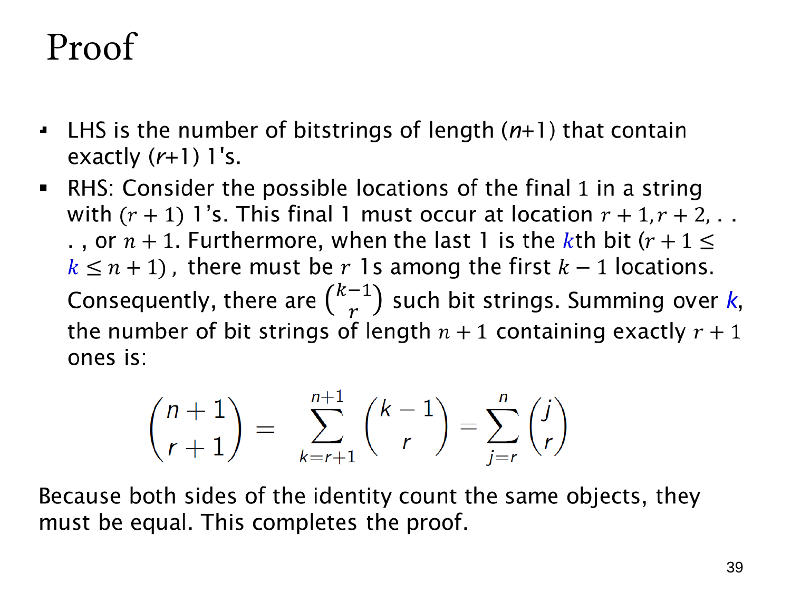

L1.7 · 第 39 页讲解原文
查看这一页课件

按最后一个 1 的位置分类：完整证明
这一页完整证明
(r+1n+1)=j=r∑n(rj).
目标对象是长度为 n+1、恰好有 r+1 个 1 的所有位串。直接选择 1 的位置，数量为左边的 (r+1n+1)。
现在令最后一个 1 的位置为 k。因为前面还必须容纳另外 r 个 1，所以
r+1≤k≤n+1.
固定 k 时，第 k 位已经确定为 1，第 k+1 位到末尾全部确定为 0。只剩前 k−1 位需要安排，且其中必须恰好有 r 个 1。因此这个类别有
(rk−1)
条位串。
所有类别相加得到
(r+1n+1)=k=r+1∑n+1(rk−1).
最后令 j=k−1，把求和上下限同时减一：
k=r+1∑n+1(rk−1)=j=r∑n(rj).
这里换求和变量没有改变任何项，只是重新编号。组合证明成立的原因是：最后一个 1 唯一确定，每种可能位置都已考虑，而两边数的是同一个位串集合。